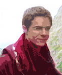

Mathieu Venot
[Naval] | {Computation} | Architecture
Hello,
My name is Mathieu Venot, I am currently studying in fourth year within the Ecole Nationale Supérieure d'Architecture de Paris Malaquais.
I started my studies at the ENSAPM in 2011 and I am very interested about digital technologies, applied to architecture or not.
So, this is why I created this website and portfolio to share my work and other related topics.
Recently, Clément Gosselin, Paul Poinet and myself have also started Sobjexurde, an imaginary architectural practice / theoretical project.
Anyway, have a good surf on this website.
Mat'
-
N.B : The material on this website is, for the most part, the documents shown into final exams at the end of the semester. The scales and details have had to be adapted to this format, and no longer reflect the original scale.
-
// RESUME
-------------------------
PDF English | French
-------------------------

Mathieu VENOT
- - - - - - -
Fourth year student in Architecture
- - - - - - -
_Experience
- - - - - - - - - -
March 2014 - Actual : Hub / 3D Hubs (Paris [75005])
3D printing services platform : https://www.3dhubs.com/paris/hubs/mathieu-0
February 2015 : Tutoring / ENSA Paris Malaquais (Paris [75006])
Tutoring for 1 week on the Inter-Semester Workshops of Digital Knowledge department (Christian DELECLUSE Workshop)
February - June 2014 : Tutoring / ENSA Paris Malaquais (Paris [75006])
Tutoring for 1 semester on the third year project studio "P6 Regressives Resolutions" of Digital Knowledge department (Pierre CUTELLIC Studio)
December 2013 : Consulting / EZCT Architecture & Design Research (Paris [75011])
Participation on a competition of urban furnishing at Umeda (Osaka [JAPAN])
3D modeling and physical model of the site (3D Printing - Laser Cutting) with Sebastian ANDRAOS, Xavier DELANOUE and Simon ERARD
Form finding in Processing with Oswald PFEIFFER
September 2013 : Tutoring / ENSA Paris Malaquais (Paris [75006])
Tutoring for 2 weeks with Clement GOSSELIN on the Digital Design Literacy 3 Workshops (Felix AGID Workshop)
July 2013 : Internship / EZCT Architecture & Design Research (Paris [75011])
Work with Tristan GOBIN for ArchiLab 2013 exhibition {FRAC Centre} (Orléans [45000])
Research and design of concrete and sand 3D printing prototypes
3D modeling and structural optimisation with Grasshopper 3D and Rhinoceros 3D
February - June 2013 : Tutoring / ENSA Paris Malaquais (Paris [75006])
Tutoring and monitoring on the Epilog's laser cutter
July 2011 : Internship / Port Napoléon's Shipyard (Port-Saint-Louis-du-Rhône [13230])
Maintenance and repairs on sailboats and speedboats
_Education
- - - - - - - - - -
2014 - 2016 : Master's degree of Architecture {MArch}
Ecole Nationale Supérieure d'Architecture de Paris Malaquais {ENSAPM} (Paris [75006])
- Digital Knowledge department, with the Arts & Métiers ParisTech {ENSAM} (Paris [75013])
- - - Materials & Additive Manufacturing module (MadMan)
2010 - 2014 : Bachelor's degree of Architecture {BArch}
Ecole Nationale Supérieure d'Architecture de Paris Malaquais {ENSAPM} (Paris [75006])
2008 - 2010 : First Cycle of Medical Studies {PCEM1}
Université de Versailles Saint-Quentin-en-Yvelines {UVSQ} (Guyancourt [78280])
2006 - 2008 : Baccalaureat Scientifique, Earth & Life Sciences speciality {Bac S, SVT}
Lycée François 1er (Fontainebleau [77300])
_Skills
- - - - - - - - - -
Softwares
CAD/CAM : ArchiCAD, SolidThinking Inspire (notions), Autodesk Inventor (notions), Rhinoceros 3D | VisualARQ, Grasshopper 3D, HAL
DTP : Adobe CS Suite : Illustrator - InDesign - Photoshop, Apple iWork Suite, Microsoft Office Suite
Scripting : Processing IDE, Web Design ([HTML, CSS]), Wolfram Mathematica (notions)
Platform : Mac OS, Windows, Linux (notions [Debian])
Digital Fabrication
3D Scanning (Microsoft Kinect)
Arduino IDE & Electronics - Raspberry Pi
Laser Cutting (Epilog) - CNC Milling Gcode (Unimat)
3D Printing Gcode (Makerbot Replicator 1 Dual / Stratasys Mojo, 3D Systems Cubify Cube 1)
Industrial Robotics Rapid (ABB IRB120 & ABB IRB1600)
Driving Licence
_Languages
- - - - - - - - - -
English : Proficient, spoken - written
French : Mother tongue
_Interests
- - - - - - - - - -
Architecture - CAO/FAO - Computation
Sailing - Windsurfing : Sailing and convoying on Coco 6.50, Dufour 325, First 35, RM 1050, Cigale 16 (West Indies, West Europe [Atlantic, Mediterranean Oceans])
Travels : 1 year around the North Atlantic Ocean on a 11 meters sailboat (Spain, Portugal, Madeira, Canaries, Cabo Verde, West Indies, Bermuda, Azores [2004-2005])